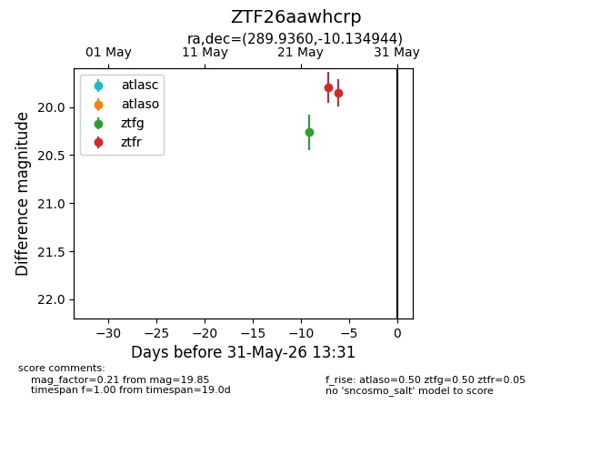
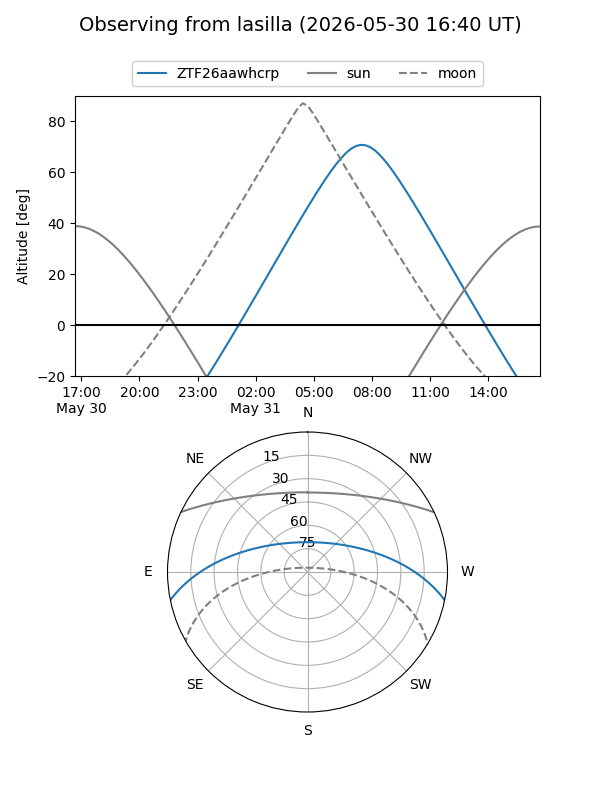
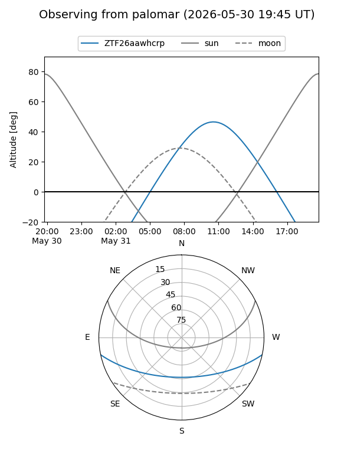
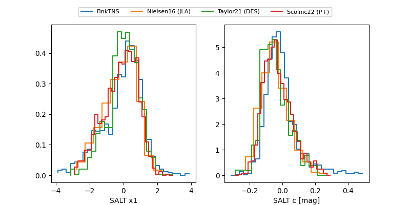

ZTF26aawhcrp
Target ZTF26aawhcrp at 2026-05-31 13:32
Aliases and brokers:
lsst-FINK: link
lsst-Lasair: link
lsst-ALeRCE: link
ztf-FINK: link
ztf-Lasair: link
ztf-ALeRCE: link
alt names
ZTF26aawhcrp (ztf,fink_ztf)
Coordinates:
equatorial (ra, dec) = 289.9360,-10.13494
equatorial (HMS+DMS) = 19:19:44.64,-10:08:05.80
galactic (l, b) = (27.0112,-10.84596)
Flags:
Photometry:
last atlaso=nan, ztfg=20.26, ztfr=19.85
1 atlaso, 1 ztfg, 2 ztfr detections
Lightcurve

Visibility


Additional plots
